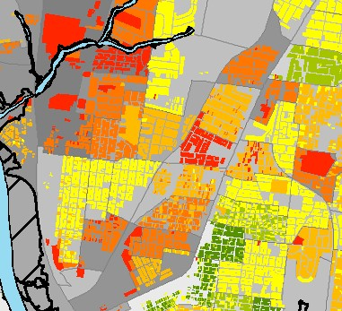

Assessment of Vulnerability and Resilience
My vulnerability and resilience assessment research is focused on
integrating core concepts in socio-environmental system planning in order to facilitate assessments that lead to positive system outcomes
by considering utility and equity across multiple spatial and temporal scales. This work is intended to inform community planning, policy
and practice, therefore, consideration of practioner utility of developed assessment frameworks and tools plays a key role in guiding the
current and future development of this research. Completed work conducted in collaboration with
Leslie Gillespie-Marthaler,
Hiba Baroud, and Mark Abkowitz include a conceptual synthesis study identifying the linkages and
dependencies between the concepts of Resilience, Vulnerability, and Sustainability and development of a proposed dynamic assessment framework
for social-environmental systems that includes elements of all three concepts. Ongoing work includes indentification of a set of foundational
indicators for dynamic resilience assessments, development of an indicator selection tool for community resilience assessment practicioners,
and an application of the framework in a case study of a flooded community. Additional completed work related to assessments focused on
extending dasymetric mapping techniques for high resolution social vulnerability mapping and developing a screening tool
for regional transportation vulnerability assessments.
Completed Papers
Gillespie-Marthaler, Leslie, Katherine S. Nelson, Hiba Baroud, David S. Kosson, and Mark Abkowitz. (2017).
Vulnerability, Resilience, and Sustainability: Multi-Scale, Dynamic Interactions within Complex Systems and the Need
for Integrative Assessment Methods (Part 1 of 2). Revised and resubmitted.
Nelson, Katherine, S., Leslie Gillespie-Marthaler, Hiba Baroud, Mark Abkowitz, and David S. Kosson. (2017).
Vulnerability, Resilience, and Sustainability: An Integrated and Dynamic Resilience Assessment Framework for Complex
Adaptive Systems (Part 2 of 2). Revised and resubmitted.
Dundon, L. A., Nelson, K. S., Camp, J., Abkowitz, M., & Jones, A. (2016). Using Climate and Weather Data to Support
Regional Vulnerability Screening Assessments of Transportation Infrastructure. Risks, 4(3), 28.
Nelson, K. S., Abkowitz, M. D., & Camp, J. V. (2015). A method for creating high resolution
maps of social vulnerability in the context of environmental hazards. Applied Geography, 63, 89-100.
Working Papers
Gillespie-Marthaler, Leslie, Katherine S. Nelson, and Mark Abkowitz. Indicators for Assessing and
Achieving Resilient and Sustainable Communities. In progress.
Presentations
Gillespie-Marthaler, Leslie, Katherine S. Nelson, and Mark D. Abkowitz. "Indicators for Assessing and
Achieving Resilient and Sustainable Communities". Society for Risk Analysis - Europe Annual Conference, Lisbon, Portugal. (June 19-21, 2017).
Nelson, Katherine S.and Leslie Gillespie-Marthaler. “Poster Paper: Resilience, Sustainability, and
Vulnerability: Multi-Scale, Dynamic Interactions within Complex Systems and an Integrative Assessment Method”.
Association for Public Policy Analysis & Management 38th Annual Fall Research Conference, Washington D.C. (November 4th, 2016).
Gillespie-Marthaler, Leslie and Katherine S. Nelson. “Poster Presentation: Resilience, Sustainability, and
Vulnerability: Multi-Scale, Dynamic Interactions within Complex Systems and an Integrative Assessment Method”.
Society of Risk Analysis Annual Fall Research Conference, San Diego, CA. (December 4th, 2016).
Kate S. Nelson, Mark Abkowitz, and Janey Camp. “A Method for Creating High Resolution Maps of Social Vulnerability”.
Association of American Geographers Annual Meeting, Chicago, IL. (April 25, 2015).
Impacts of Policies and Institutions
 My research related to the impacts of policies and institutions on humans and
the environment includes quantitative studies of water scarcity, urban flooding, and inland waterway shipping. Water scarcity projects have focused on
investigating human structured and spatially dependent effects of drought and water shortages in social-environmental systems. Completed work includes a
study investigating the effect of legally structured access to surface water on agricultural productivity during drought in California's Central Valley
using multilevel Bayesian spatiotemporal analysis conducted in collaboration with Emily Burchfield.
Further work in water scarcity will investigate non-linearities in crop-specific drought response and spatial dependencies in individual perceptions of water
scarcity in Latin America. Ongoing flood impact projects are focused on examining the costs and benefits of: implemented flood adaptation measures, social
vulnerability and ecosystem services. Projects related to inland waterway shipping have examined the effects of Waterway Action Plans on commercial
shipping operations by simulating tow traffic responses to implementation of extreme weather induced operational procedures. Completed work includes
the development of an agent-based model of tow traffic on a generic navigable inland waterway with multiple locks and dams. Ongoing work includes
a calibration and validation of the developed agent-based model with an independent observed data set of tow movements and a case study of the impacts
of regulatory guidelines on navigation given conditions of a historical incident.
My research related to the impacts of policies and institutions on humans and
the environment includes quantitative studies of water scarcity, urban flooding, and inland waterway shipping. Water scarcity projects have focused on
investigating human structured and spatially dependent effects of drought and water shortages in social-environmental systems. Completed work includes a
study investigating the effect of legally structured access to surface water on agricultural productivity during drought in California's Central Valley
using multilevel Bayesian spatiotemporal analysis conducted in collaboration with Emily Burchfield.
Further work in water scarcity will investigate non-linearities in crop-specific drought response and spatial dependencies in individual perceptions of water
scarcity in Latin America. Ongoing flood impact projects are focused on examining the costs and benefits of: implemented flood adaptation measures, social
vulnerability and ecosystem services. Projects related to inland waterway shipping have examined the effects of Waterway Action Plans on commercial
shipping operations by simulating tow traffic responses to implementation of extreme weather induced operational procedures. Completed work includes
the development of an agent-based model of tow traffic on a generic navigable inland waterway with multiple locks and dams. Ongoing work includes
a calibration and validation of the developed agent-based model with an independent observed data set of tow movements and a case study of the impacts
of regulatory guidelines on navigation given conditions of a historical incident.
Completed Papers
Nelson, Katherine, S., Janey V. Camp, Craig E. Philip, and Mark D. Abkowitz.(2017). Agent-Based Model of Navigable
Inland Waterway Tow Operation Procedures. Transportation Research Record: Journal of the Transportation Research Board.
No. 2611. doi 10.3141/2611-02.
Nelson, Katherine S. and Emily K. Burchfield. (2017). Does the Structure of Water Rights Impact Agricultural
Production During Droughts? A Spatiotemporal Analysis of California’s Central Valley. Revised and resubmitted. Working paper version can be found
here.
Working Papers
Burchfield, Emily K. and Katherine S. Nelson. A Spatiotemporal Analysis of Agricultural Productivity and Yield in California. In Progress.
Nelson, Katherine, S., Paul Johnson, and Patricia Dijoseph. Calibration and Validation of an Agent-based Model of
Inland Waterway Tow Traffic. In progress.
Nelson, Katherine S. and Claire Q. Evans. "Spatial Patterns of the Percieved Effects of Water Scarcity in Latin America". Starting Fall 2017.
Presentations
Nelson, Katherine S. and Emily K. Burchfield. “Panel Paper: Does the Structure of Water Rights Impact Agricultural
Production During Droughts? A Spatiotemporal Analysis of California's Central Valley”. Association for Public Policy
Analysis & Management 38th Annual Fall Research Conference, Washington D.C. (November 4th, 2016).